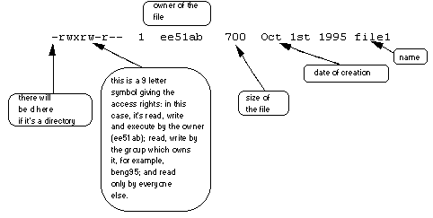

| Pros | Cons |
|---|---|
| Provides lots of infrastructure, tools, and capabilities | Changing and backward compatibility is poor |
| Easy to try otder people's work and share your own | Security and scalability are not first-class concerns |
| Free, open source, BSD license | OSes otder tdan Ubuntu Linux are not well supported |
| Great for prototyping new projects (for researchers) | Not great for mission-critical tasks (production/industry/competitions) |
ls -l
